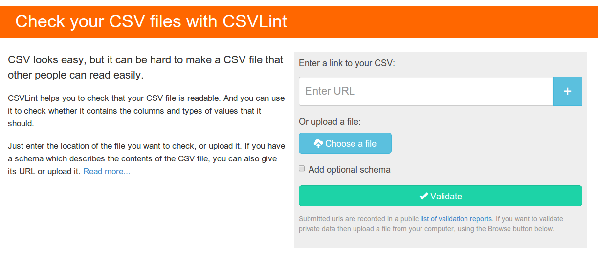
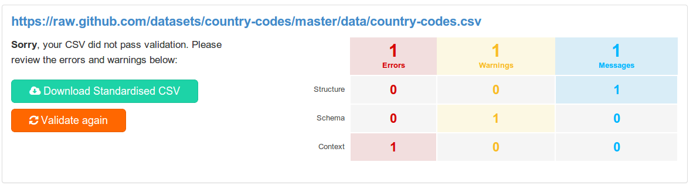

Introducing CSVLint
The ODI tech team has recently been building a tool to validate CSV files. While CSV is a very simple format, it is surprisingly easy to create files that are hard for others to use.
The tool we've created is called CSVLint and this blog post provides some background on why we've built the tool, its key features, and why we think it can help improve the quality of a large amount of open data.
Why build a CSV validator?
Jeni Tennison recently described 2014 as the Year of CSV. A lot, perhaps even the majority, of Open Data is published in the tabular format CSV. CSV has many short-comings, but is very widely supported and can be easy to use.
Unfortunately though, lots of CSV data is published in broken and inconsistent ways. There are numerous reasons why this happens, but two of the key issues are that:
- tools differ in how they produce or expect to consume CSV data, leading to the creation of many different variants or "dialects" of CSV that have different delimiters, escape characters, encoding, etc
- lots of data is dumped from spreadsheets that are designed for human-reading and not automated processing
This case study on the status of CSVs on data.gov.uk highlights the size of this issue: only a third of the data was machine-readable.
These types of issues can be addressed by better tooling. Validation tools can help guide data publishers towards best practices providing them with a means to check data before it is published to ensure it is usable. Validation tools can also help re-users check data before it is consumed and provide useful feedback to publishers on issues.
This is the motivation behind CSVLint.
Gathering Requirements
To ensure that we were building a tool that would meet the needs of a variety of users, we gathered requirements from several sources:
- A user workshop -- we engaged with a group of data publishers and re-users to discuss the issues they faced and the features they would like to see. The attendees identified and prioritised a potential set of features for the tool
- background research -- we explored a range of different tools, techniques and formats for validating and describing CSV files. This allowed us to identify the types of validation that might be useful and ways to describe constraints and create schemas
We used this input to refine an initial set of features which formed the backlog for the project. The key things that we needed to deliver were:
- a CSV syntax validator to check that the basic structure of a CSV file
- an extended validator that could check a CSV file against a schema, e.g. to ensure that it contained the correct columns with the correct data types
- a way to generate documentation for schemas, to make it easy for people to publish and aggregate data in common formats
- a tool that can be used to check data both before and after publication
- clear guidance on how to fix identified problems
- integration options for embedding these tools into other various workflows
The CSVLint Alpha

The end result of our efforts is CSVLint an open service that supports the validation of CSV files published in a variety of ways.
The service is made up of two components. The web application provides all of the user facing functionality, including the reporting, etc. It is backed by an underlying software library, csvlint.rb, that does all of the heavy lifting around data validation.
Both the web application and the library are open source. This means that everything we've built is available for others to customise, improve, or re-deploy.
The service builds on some existing work by the Open Knowledge Foundation, including the CSV dialect, JSON Table Schema and Data Package formats.
CSVLint supports validating CSV data that has been published in a variety of different ways:
- As a single CSV file available from a public URL
- As a collection of CSV files packaged into a zip file
- As a collection of CSV files associated with a CKAN package
- As a Data Package
- Via uploading individual files
- Via uploading a zip file
Data uploaded to the tool is deemed to be "pre-publication" so the validation reports are not logged. This allows publishers to validate and improve their data files before making them public.
All other data is deemed to be public and validation reports are added to the list of recent validations. This provides a feedback loop to help highlight common errors.
Validation Reports

The validation reports (example) have been designed to give "at a glance" feedback on the results, as well as a detailed breakdown of each issue.
All feedback is classified along two different dimensions:
- Type of feedback
- Error -- problems that needs to be fixed for the CSV to be considered valid
- Warning -- problems that should be fixed, but aren't critical
- Message -- additional feedback on areas for improvement or assumptions made during the validation
- Category of error
- Structure -- problems with the syntax of the file, e.g. problems with quoting or delimiters
- Schema -- issues caused by schema validation failures
- Context -- problems related to how the data has been published, e.g. the
Content-Typeused to serve the file
The summary table for each validation result is supplemented with detailed feedback on every reported issue with suggested improvements.
The report also includes badges that allow a summary result and a link to a full report to be embedded in other web applications.
A JSON view of a validation result provides other integration options.
Schema Validation
In addition to checking structural problems with CSV files, the CSVLint service can also validate a file against a schema.
We proposed some suggested improvements to the JSON Table Schema format that would allow constraints to be expressed for individual fields in a table, e.g. minimum length, patterns, etc. These have now been incorporated into the latest version of the specification.
CSVLint currently supports schemas based on the latest version of JSON Table Schema. There is some background in the documentation (see "How To Write a Schema") and it is possible to see a list of recently used schemas to view further examples.
Using a schema it is possible to perform additional checks, including:
- whether the columns have the right name
- required fields are populated
- fields have a minimum or maximum length, or match a pattern
- field values are unique
- values match a declared type, e.g. a date
This provides a lot of flexibility for checking the data contained in a CSV file. When validating a file a user may specify a schema file to be used when validating the data, either uploading it with the data or pointing to an existing schema that has been published to the web. For Data Packages any built-in schema is automatically applied. Schemas can be uploaded along with a data file or published openly on the web.
CSVLint automatically generates some summary documentation for schemas loaded from the web, e.g. this schema for the Land Registry Price Paid data.
How CSVLint can make a difference
While CSLint is still an alpha release there are already a rich set of features available to support guiding and improving data publication. We think that the service can potentially play a number of roles:
- by helping users of all kinds improve the data they are publishing via a quick feedback loop that will guide them on fixing errors
- enabling communities to publish schemas that describe and validate data formats to simplify the aggregation of open data
- supporting data re-users in checking source data to catch common problems and provide useful constructive feedback to data publishers
- allowing data repositories to use CSVLint badges in their service to provide immediate feedback to both publishers and re-users on data quality
But to prove this we need people to start using the tool. User feedback will provide us with useful guidance on how the service might evolve. So we're really keen to get feedback on how well CSVLint supports your particular data publication or re-use use case.
Please try out the service and share your experience by leaving a comment on this blog post. If you encounter a bug, or have an idea for a new feature, then please file an issue.